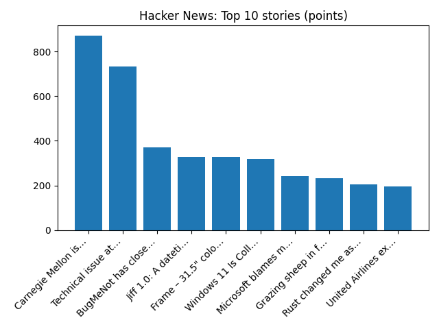

Trump’s Asia trip: Deals in Manila and Shenzhen, nuclear summit with Xi and Putin, maybe Kim meeting - AP News
AP — Headlines (Google News)
YOUR DAILY INTELLIGENCE BRIEF · 2026-11-17

Global coverage includes Trump’s Asia trip: Deals in Manila and Shenzhen, nuclear summit with Xi and Putin, maybe Kim meeting - AP News; Nvidia dismisses 'Bring Jensen Back' campaign as Trump backs effort to reinstate ex CEO; 2026 U.S. House Election Results - AP News.
No data

Live in Seattle
Live in Seattle may refer to:
Live in Seattle (John Coltrane album), a 1965 album by jazz musician John Coltrane Live in Seattle (Shawn McDonald album), the first live album by singer/songwriter Shawn McDonald Live in Seattle (Jay Farrar album), a live recording by Jay Farrar, along with Eric Heywood and Mark Spencer Live in Seattle (Kind of Like Spitting album), a Kind of Like Spitting album Live in Seattle (Zony Mash album), a live recording by Wayne Horvitz' band Zony Mash https://en.wikipedia.org/wiki/Live_in_Seattle
NGC 7129: Star Formation with Jets from Webb
Runs so far today: 1